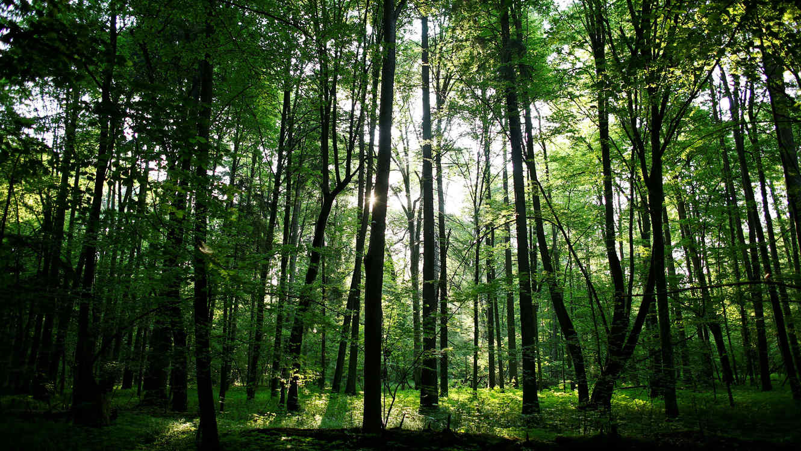
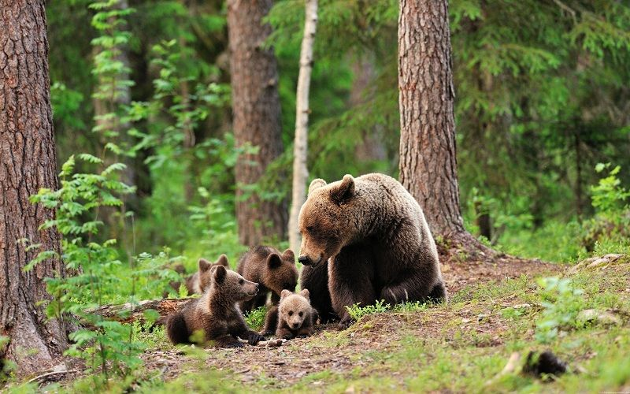

Bosque

Características
Los bosques son caracterizados por poseer gran cantidad de árboles y una gran diversidad de especies de fauna y flora que hace de este bioma uno de los más importantes para la biósfera del planeta.
Ubicación geográfica
Los bosques se distribuyen alrededor del mundo, pero los principales y con más cobertura de hectáreas se encuentran en Rusia, seguido de Brasil, Norteamérica, China, Australia y el Congo.
Clasificación de los Bosques
Existen tres tipos de bosques que están clasificados de acuerdo a su latitud. Estos son:
-
Bosque tropical. Están ubicados cerca del ecuador y las temperaturas oscilan entre 20 a 25°C. El suelo es pobre y la descomposición rápida. Habitan murciélagos, una gran variedad de aves e insectos. Existe una gran diversidad de vegetación, pues en 1 km2 pueden encontrarse hasta 100 tipos de árboles de hasta 35 metros de altura. También se encuentran orquídeas, helechos y palmas.
-
Bosque Templado. Ubicados en Norteamérica, Asia y Europa. Con temperaturas de -30 a 30°C, el suelo es muy fértil y la fauna está representada por linces, pumas, zorros, osos negros y lobos, entre otros. La vegetación se caracteriza por estar formada por tres o cuatro especies de árboles por km2. Entre ellos el roble, sauce, nogal y abeto.
-
Bosque de Coníferas. También llamado Taiga, se encuentra en el hemisferio norte del planeta y representa el mayor bioma terrestre. Las temperaturas son muy frías y por lo tanto el suelo es muy poco fértil. Los alces, musarañas, halcones, zorros, lobos, entre muchos otros, forman parte de su fauna. Los pinos y las formaciones boscosas de coníferas con hojas perennes, representan en gran parte la vegetación de este lugar.
Exceptuando a las coníferas, en estos tipos de bosque se puede encontrar gran cantidad de biomasa, es decir, materia orgánica ideal para ser utilizada como fuente de energía y cuidar nuestro medio ambiente.
Bosques primarios, secundarios y artificiales
Existe también otra clasificación de acuerdo al impacto del hombre.
Los bosques primarios son aquellos que no han tenido la intervención humana o bien, es tan mínima que no llega a afectar la biodiversidad.
Los secundarios son los bosques que han sido salvados y regenerados después de una tala parcial o total.
Y como bien su nombre lo dice, los bosques artificiales son los que han sido recreados por el hombre, ya sea para conservación de las especies o para la obtención de maderas.
Paisaje de los Bosques
Los bosques están formados por mucha vegetación y dentro de ellos se pueden encontrar especies muy exóticas y peligrosas. Muchos exploradores se adentran en estos lugares para realizar estudios y conocer el modo de vida de distintas especies, pero deben de estar muy bien ubicados para no perderse, ya que ahí es muy fácil perder el sentido de la orientación.

ATRAS